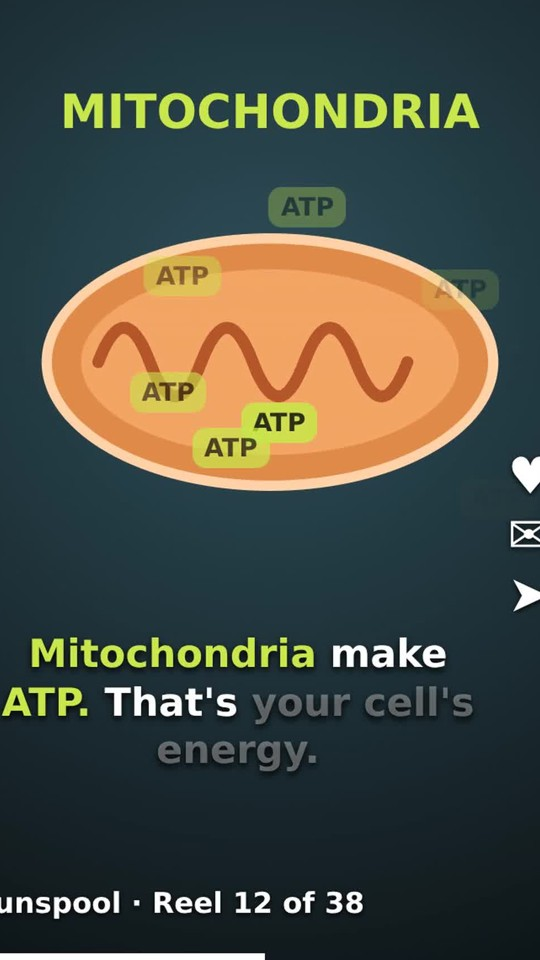

<!doctype html><html><head><meta charset="utf-8"><style>
@font-face{font-family:Unb;src:url(Unbounded-700.ttf)} @font-face{font-family:Ins;src:url(InstrumentSans-600.ttf)}
html,body{margin:0;width:720px;height:1280px;overflow:hidden;background:#e4f1eb}
#ov{position:absolute;inset:0;overflow:hidden}
.chip{display:inline-block;margin:5px;padding:9px 18px;border-radius:24px;background:#f5f6f7;border:2px solid #d4d9df;font:600 27px Ins;color:#1d2440;box-shadow:0 3px 0 rgba(29,36,64,.12)}
.chip.key{background:#2f6fe6;border-color:#2f6fe6;color:#fff}
.card{position:absolute;background:#fff;border-radius:18px;box-shadow:0 10px 30px rgba(29,36,64,.12);border:2px solid #e3e7ec}
.dots{display:flex;gap:6px;padding:10px 14px;border-bottom:1px solid #eef0f3}.dots i{width:10px;height:10px;border-radius:50%;background:#e3e7ec}
</style></head><body><div id="ov"></div>
<script type="module">
import { drawCharacter, loadCharacter } from "./character.js";
const TL = await (await fetch("tl.json")).json(); const lines = TL.lines, DUR = TL.dur, ENV = TL.env; window.DUR = DUR;
await Promise.all([document.fonts.load("700 40px Unb"), document.fonts.load("600 20px Ins")]);
await loadCharacter();
const clamp = (x, a = 0, b = 1) => Math.min(b, Math.max(a, x)), mix = (a, b, x) => a + (b - a) * x;
const ease = (x) => { x = clamp(x); return x < 0.5 ? 4 * x * x * x : 1 - Math.pow(-2 * x + 2, 3) / 2; };
const outBack = (x) => { x = clamp(x); const k = 1.7; return 1 + (k + 1) * Math.pow(x - 1, 3) + k * Math.pow(x - 1, 2); };
const pop = (k) => `transform:scale(${outBack(k)});opacity:${clamp(k * 3)}`;
const A = (x, y, inner, extra = "") => `<div style="position:absolute;left:${x}px;top:${y}px;${extra}">${inner}</div>`;
const shotIdx = (t) => { let k = 0; for (let i = 0; i < lines.length; i++) if (t >= lines[i].s - 0.1) k = i; return k; };
const st = (n) => lines.find((l) => l.shot === n).s - 0.1;
const ov = document.getElementById("ov");
// how the character looks on each line
const EXPR = { hook: "neutral", page: "neutral", hi: "smile", noidea: "think", topic: "neutral", define: "neutral", reread: "think", dig: "neutral", quiz: "wink", unspool: "smile", pull: "neutral", cta: "smile", end: "smile" };
// words shown as blue key chips
const KEY = /^(highlighted|uni|no|idea|active|recall|own|head|looking|dig|stick|quiz|unspool|reels|pull|free)$/i;
const TOPIC_FROM = "topic";

// the words of the current line as chips, popping in as they're said (phrases of up to 6, like the reference)
function chips(L, t) {
  if (!L.text) return "";
  const words = L.text.split(" "), tot = words.reduce((a, w) => a + w.length + 1, 0), u = clamp((t - L.s) / (L.e - L.s)) * tot;
  let acc = 0, said = 0; words.forEach((w, i) => { if (u >= acc) said = i + 1; acc += w.length + 1; });
  const start = Math.floor((said - 1) / 6) * 6;
  return words.slice(start, said).map((w, i) => { const age = (u - words.slice(0, start + i).reduce((a, x) => a + x.length + 1, 0)) / tot * (L.e - L.s);
    return `<span class="chip${KEY.test(w.replace(/[.,!?']/g, "")) ? " key" : ""}" style="${pop(age / 0.18)}">${w}</span>`; }).join("");
}

// diagrams
function diagram(shot, lt, t) {
  const W = (s, k = 1) => `<div style="width:720px;text-align:center;font:700 44px Unb;color:#1d2440;letter-spacing:-1px;${pop(k)}">${s}</div>`;
  if (shot === "hook" || shot === "page" || shot === "hi" || shot === "noidea") {
    const k = clamp((t - st("hook") - 0.2) / 1.6);
    const lines_ = [88, 76, 92, 60, 84, 90, 70, 86];
    return A(0, 40, W("Highlight.")) + A(150, 120, `<div class="card" style="position:relative;width:420px;padding:18px 22px">${lines_.map((w, i) => { const f = clamp(k * lines_.length - i); return `<div style="position:relative;height:12px;margin:12px 0;border-radius:6px;background:#c9ced6;width:${w}%">${f > 0 ? `<div style="position:absolute;left:-4px;top:-6px;height:24px;width:calc(${f * 100}% + 8px);background:rgba(255,226,64,.75);border-radius:4px"></div>` : ""}</div>`; }).join("")}</div>`)
      + (shot === "page" && lt > 1.6 ? A(0, 470, `<div style="width:720px;text-align:center;font:600 22px Ins;color:#5f6b80;${pop((lt - 1.6) / 0.3)}">…what did you just read?</div>`) : "");
  }
  let h = "";
  if (shot === "topic" || shot === "define") {
    h += A(0, 40, W("active recall", (t - st("topic")) / 0.3)) + A(0, 104, `<div style="width:720px;text-align:center;font:600 22px Ins;color:#5f6b80">pulling the answer out of your own head</div>`);
    if (shot === "define") { const k = ease((lt - 0.6) / 1.4);
      h += A(70, 170, `<div class="card" style="position:relative;width:240px;height:200px"><div class="dots"><i></i><i></i><i></i></div><div style="text-align:center;padding-top:40px;font:700 26px Unb;color:#1d2440">your notes</div></div>`);
      h += A(410, 170, `<div class="card" style="position:relative;width:240px;height:200px"><div class="dots"><i></i><i></i><i></i></div><div style="text-align:center;padding-top:40px;font:700 26px Unb;color:#1d2440">your head</div></div>`);
      h += A(mix(440, 250, k), mix(290, 385, k), `<span class="chip key" style="font-size:22px">the answer</span>`);
      h += A(0, 470, `<div style="width:720px;text-align:center;font:600 20px Ins;color:#2f6fe6;opacity:${clamp((lt - 1.6) / 0.3)}">you pull it out, not look it up</div>`); }
    return h;
  }
  if (shot === "reread" || shot === "dig" || shot === "quiz") {
    h += A(0, 40, W("reading vs recalling", (t - st("reread")) / 0.3));
    const card = (x, title, icon, sub, k, good) => A(x, 130, `<div class="card" style="position:relative;width:280px;height:260px;${pop(k)};${good ? "border-color:#2f6fe6" : ""}"><div class="dots"><i></i><i></i><i></i></div><div style="text-align:center;font-size:64px;margin-top:22px">${icon}</div><div style="text-align:center;font:700 26px Unb;color:#1d2440;margin-top:8px">${title}</div><div style="text-align:center;font:600 19px Ins;color:${good ? "#2f6fe6" : "#5f6b80"};margin-top:6px">${sub}</div></div>`);
    h += card(60, "rereading", "👀", "just looking", (t - st("reread")) / 0.3, false);
    if (shot !== "reread") h += card(380, "recalling", "⛏️", "digging it up → sticks", (t - st("dig")) / 0.3, true);
    if (shot === "quiz") h += A(0, 420, `<div style="width:720px;text-align:center;${pop((lt - 0.3) / 0.3)}"><span class="chip key" style="font-size:26px">1 quick quiz</span><span style="font:700 30px Unb;color:#1d2440;margin:0 12px">&gt;</span><span class="chip" style="font-size:26px">a 4th reread</span></div>`);
    return h;
  }
  if (shot === "unspool" || shot === "pull" || shot === "cta" || shot === "end") {
    const k = ease((t - st("unspool") - 0.6) / 1.0), q = t > st("unspool") + 2.4;
    h += A(0, 40, W("unspool", (t - st("unspool")) / 0.3)) + A(0, 104, `<div style="width:720px;text-align:center;font:600 22px Ins;color:#5f6b80">your notes → short reels → a quiz in every one</div>`);
    h += A(250, 150, `<div style="width:220px;height:400px;border-radius:30px;background:#111;padding:9px;box-sizing:border-box;box-shadow:0 14px 30px rgba(29,36,64,.25)"><div style="width:100%;height:100%;border-radius:22px;overflow:hidden;background:#0f1d18;position:relative">
      
      ${q ? `<div style="position:absolute;left:12px;right:12px;top:110px;background:#fff;border-radius:12px;padding:10px;font:600 13px Ins;color:#1d2440"><b style="display:inline-block;background:#d3f05a;padding:2px 6px;font:700 10px Unb">QUICK CHECK</b><div style="margin:6px 0">What do mitochondria make?</div>${["Glucose", "ATP", "Oxygen"].map((o, x) => `<div style="margin-top:5px;padding:5px 8px;border-radius:8px;border:2px solid ${x === 1 && t > st("unspool") + 3.2 ? "#1f9d55" : "#e3e7ec"}">${o}${x === 1 && t > st("unspool") + 3.2 ? " ✓" : ""}</div>`).join("")}</div>` : ""}</div></div>`);
    if (shot === "cta" || shot === "end") { const c = t - st("cta"); h += A(0, 590, `<div style="width:720px;text-align:center;${pop(c / 0.35)}"><span style="display:inline-block;background:#1d2440;color:#fff;font:700 34px Unb;padding:14px 30px;border-radius:40px">unspool.cc</span><div style="margin-top:8px;font:600 20px Ins;color:#5f6b80">first reel free</div></div>`); }
    return h;
  }
  return "";
}

window.renderAt = (t) => {
  const i = shotIdx(t), L = lines[i], shot = L.shot, lt = t - (L.s - 0.1);
  const late = t >= st(TOPIC_FROM) - 0.2;
  const sw = ease((t - (st(TOPIC_FROM) - 0.2)) / 0.6);                   // the move from "big, centred" to "small, bottom left"
  const talk = clamp((ENV[Math.floor(t * 30)] ?? 0) * 1.3);
  const blink = (t % 3.7) < 0.12 ? 1 : 0;
  let expr = EXPR[shot] ?? "neutral";
  const scale = mix(1.35, 0.78, sw), cx = mix(360, 180, sw), bottom = mix(1280 + 40, 1170, sw);
  let h = `<div style="position:absolute;inset:0;background:radial-gradient(90% 60% at 50% 30%,#f2f8f5,#e1efe8)"></div>`;
  h += diagram(shot, lt, t);
  h += `<div style="position:absolute;left:${cx - 200 * scale}px;top:${bottom - 560 * scale}px;width:400px;height:560px;transform:scale(${scale});transform-origin:0 0">${drawCharacter({ expr, talk: expr === "neutral" || expr === "think" ? talk : 0, blink, t, tilt: Math.sin(t * 0.9) * 2 })}</div>`;
  // name tag on "Hi! I'm Uni."
  if (shot === "hi" || shot === "noidea") h += A(440, 790, `<span class="chip" style="font:700 34px Unb;padding:10px 26px;${pop((t - st("hi") - 0.5) / 0.3)}">Uni</span>`);
  // the speech chips beside the head
  h += late ? A(330, 860, `<div style="width:370px">${chips(L, t)}</div>`) : A(400, 620, `<div style="width:300px">${chips(L, t)}</div>`);
  // the question bar, once the topic is set
  if (late) h += A(0, 1196, `<div style="width:720px;height:84px;background:#1d2440;display:flex;align-items:center;justify-content:center;font:700 30px Unb;color:#fff;transform:translateY(${(1 - sw) * 90}px)">What is active recall?</div>`);
  ov.innerHTML = h;
};
await new Promise((r) => { const i = new Image(); i.onload = i.onerror = r; i.src = "mito.jpg"; });
window.renderAt(0); setTimeout(() => (window.ready = true), 300);
</script></body></html>
